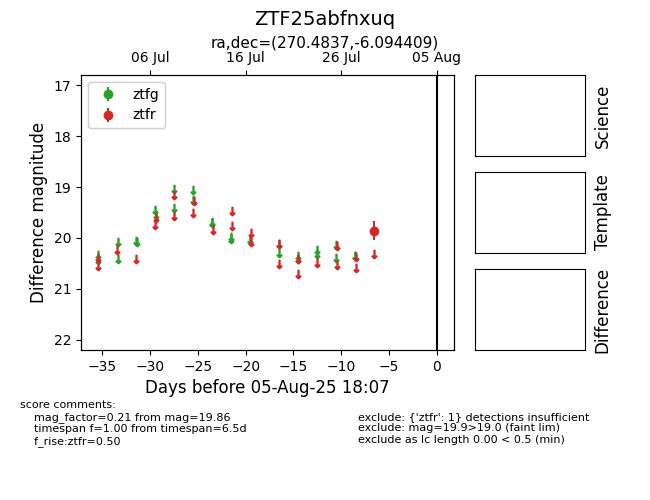

Target ZTF25abfnxuq at 2025-08-05 23:08, see:
FINK: fink-portal.org/ZTF25abfnxuq
Lasair: lasair-ztf.lsst.ac.uk/objects/ZTF25abfnxuq
ALeRCE: alerce.online/object/ZTF25abfnxuq
alt names
ZTF25abfnxuq (ztf,fink)
coordinates:
equatorial (ra, dec) = (270.4837,-6.09441)
galactic (l, b) = (21.7688,+8.12051)
photometry
last ztfr=19.86
1 ztfr detections
